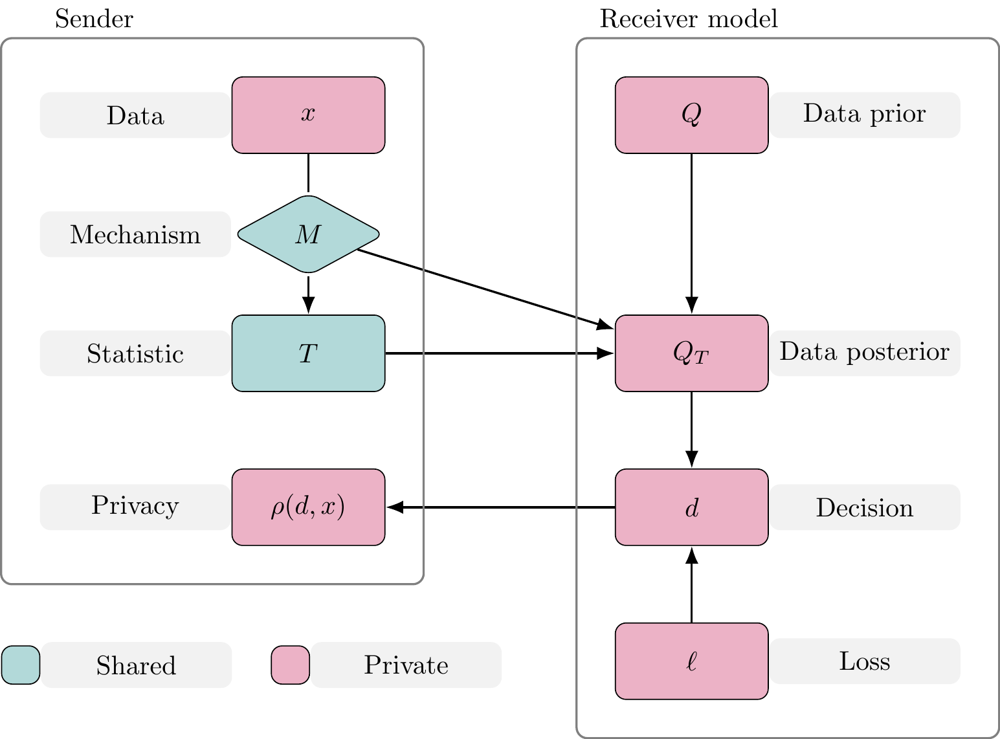
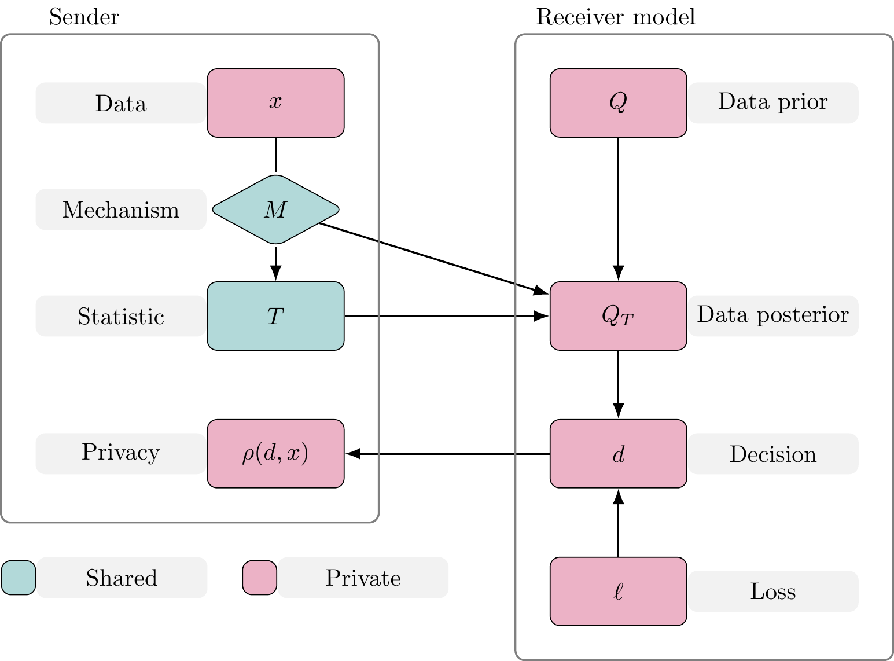
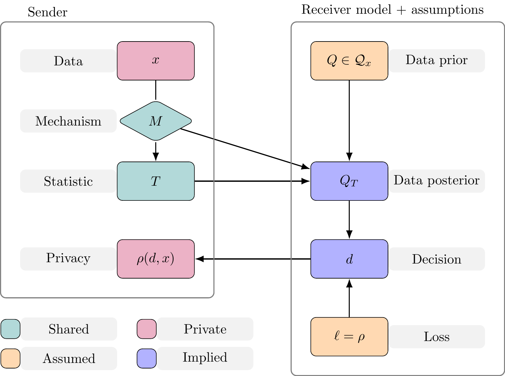
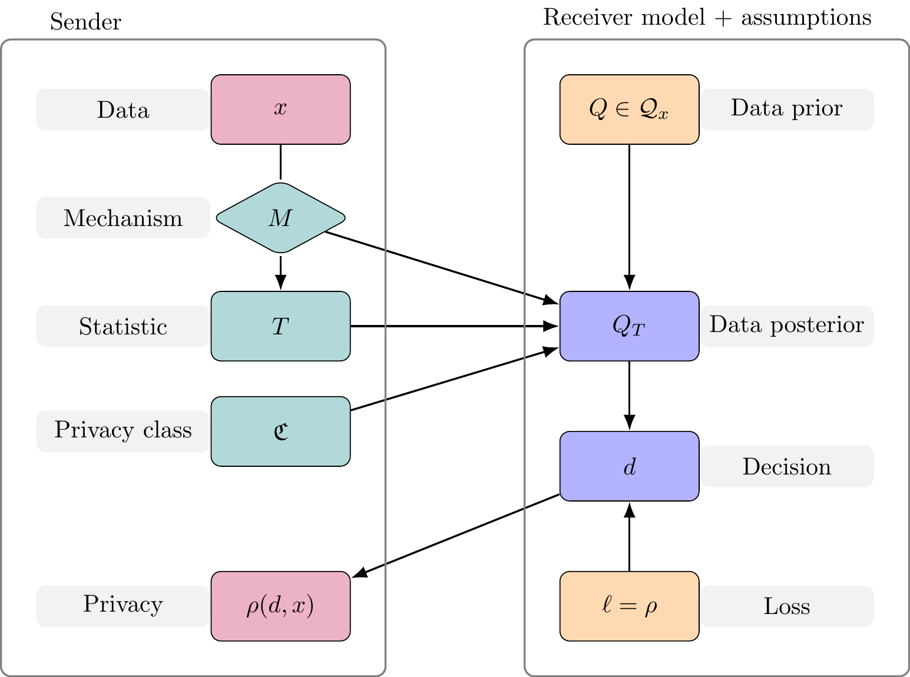

Persuasive Privacy
University of Melbourne, 23rd March 2026
Joshua J Bon
Adelaide University
My research
My research
Statistics
- Bayesian modelling1 2
- Efficient computation3 4 5
- Approximate models3 4
My research
Privacy
- Federated & transfer learning1 2
- Private (Bayesian) computation3
- Approximate models4
Today’s talk
Today’s talk
- Differential privacy
- Privacy from the ground up
- Persuasive privacy
- Differential privacy redux
- Privacy without noise
See: Bon, Bailie, Rousseau & Robert (2026) arXiv 2601.22945
Under review at ICML 2026
Differential privacy
DP framework
\text{Dataset}~x \overset{\text{release}}{\longrightarrow} \text{statistic}~T
- T \sim M(x,\cdot), with some mechanism M
For example, let T = \frac{1}{n}\sum_{i=1}^{n} x_i + Z with Z \sim \mathcal{N}(0,\sigma^2)
M(x,\cdot) = \mathcal{N}(\overline{x}_n,\sigma^2)
DP Intuition
Information about data x leaked through statistic T is controlled by how sensitive the mechanism M(x,\cdot) is to x.
Measuring sensitivity? I can take the derivative of M(x,\cdot) w.r.t. x!
No!
DP Definition
Borrow from Lipschitz continuity: M is (\epsilon)-DP if
d_\text{P}[M(x,\cdot),M(x^\prime,\cdot)] \leq \exp(\epsilon) d_\text{X}[x,x^\prime] for all (x,x^\prime) \in S where S is a set of (data) neighbours.
Laplace mechanism
A fundamental mechanism for DP adds Laplace noise to a deterministic function of the data to ensure privacy.
DP Definition
Borrow from Lipschitz continuity: M is (\epsilon,\delta)-DP if
d_\text{P}[M(x,\cdot),M(x^\prime,\cdot)] \leq \exp(\epsilon) d_\text{X}[x,x^\prime] + \delta for all (x,x^\prime) \in S where S is a set of (data) neighbours.
Some DP Properties
Focusing on \epsilon-DP.
- Composition: If M_1 and M_2 are \epsilon-DP then
M_1 \otimes M_2 ~\text{is}~ 2\epsilon\text{-DP}
- Post-processing: If K is independent of the data then
M_1 K ~\text{is}~ \epsilon\text{-DP}
Some DP Properties
Focusing on \epsilon-DP.
- Composition:
If releasing the mean and variance of a dataset is \epsilon-DP respectively, then the joint release is 2\epsilon-DP.
- Post-processing:
If some mechanism M creates a synthetic dataset that is \epsilon-DP then any summary statistic from the synthetic dataset will also be \epsilon-DP.
DP Semantics
- Hypothesis testing: Type I & II error controlled by (\epsilon, \delta)
- Bayesian evidence
- Prior-to-posterior ratio controlled
- Posterior-to-posterior ratio controlled
- Game theory
- Controls expected utility
… post-hoc explanations of DP
Privacy from the ground up
Overview of statistical data privacy
Sender
Government agency release small area statistics on a disease
Receiver
Insurance company raises premiums using inferred disease prevalence in a small town
Effect on data privacy
Statistic release \longrightarrow adversarial decisions \longrightarrow privacy effect
Anatomy of statistical data privacy
The players
Sender
- Custodian of data
- Will use mechanism to release information about data
Receiver
- Makes decision based on revealed information
- Decision affects Sender’s privacy
Privacy function
Sender’s privacy measured with a privacy function
\rho:\mathcal{D} \times \mathsf{X} \rightarrow \mathbb{R}
Receiver’s decision \quad d_i \in \mathcal{D}
Data value \quad x \in \mathsf{X}
\rho orders preferences of decisions for a given dataset
- If d_1 is preferred to d_2 then \rho(d_1,x) > \rho(d_2,x)
Example 1: Privacy function
For some fixed \kappa>0,
\rho(d,x) = \begin{cases} 0, & \text{if } x \in d, \vert d \vert < \kappa\\ 1, & \text{otherwise}, \end{cases}
x \in \mathsf{X} = \mathbb{R}
d \in \mathcal{D} = \{[a,b]:a,b\in \mathbb{R}, a\leq b\}
Example 2: Privacy function
\rho(d,x) = -\log d(x)
x \in \mathsf{X} = \mathbb{R}
d \in \mathcal{D} = \{\text{probability density functions on } \mathbb{R}\}
The statistic
A statistic T \in \mathsf{T} is output from a mechanism M given x
T \sim M(~\cdot \mid x)
- M:\mathcal{T} \times \mathsf{X} \rightarrow [0,1] for (\mathsf{T},\mathcal{T}) measurable space
The statistic
M can be deterministic or randomised
- Summary statistics \quad\tau:\mathsf{X}\rightarrow\mathsf{T}
- M(~\cdot \mid x) = \delta_{\tau(x)}(\cdot)
- Noisy summary statistics
- M(~\cdot \mid x) = \mathcal{N}(~\cdot \mid \tau(x), \sigma^2)
- Composition of multiple mechanisms
The statistic
M can be deterministic or randomised
- Result of optimisation
- MLE: \quad M(~\cdot \mid x) = \delta_{\tau(x)}(\cdot)
- \tau(x) = \arg\max_{\theta \in \Theta} \log L(x \mid \theta)
- Monte Carlo output
- MCMC: \quad M(\mathrm{d}t_{1:N} \mid x) = \prod_{i=1}^N K(\mathrm{d}t_{i} \mid t_{i-1}, x)
- Noisy optimisation
- SGD: \quad M(\mathrm{d}t_N \mid x) = \int_{\mathsf{T}_{-n}}\prod_{i=1}^N K(\mathrm{d}t_{i} \mid t_{i-1}, x)
Transperancy
Privacy class: A set of mechanisms that satisfy a given privacy definition.
Assumption 1: Transperancy
Sender shares the mechanism M and privacy class \mathfrak{C}, for which M \in \mathfrak{C}, with Receiver. Further, the definitions of M and \mathfrak{C} do not depend on the data.
Receiver
Assumption 2: Bayesian adversary
Receiver makes Bayesian decisions
- Holds a prior distribution over the data Q
- Constructs a posterior distribution Q_T from (M,T)
- Make Bayesian decisions
- loss function \ell: \mathcal{D} \times \mathsf{X} \rightarrow \mathbb{R}
Anatomy of statistical data privacy

Receiver’s optimal decision
From Assumption 1:
Receiver’s optimal decision
d^{P} \in \arg\inf_{d \in \mathcal{D}} \mathbb{E}_{z \sim P}[ \ell(d,z)] Prior to release P = Q, post-release P = Q_T.
To measure privacy: We need assumptions on Q and \ell
Unknown adversaries
Assumption 2: Adversarial loss function
Receiver has loss function \ell(d,x) = \rho(d,x)
- Interpretation 1: Receiver targets privacy
If d^P_{\ell^\prime} is Receiver’s optimal decision under (P,\ell^\prime) then
\mathbb{E}_{x \sim P}[ \rho(d^{P}_\rho,x)] \leq \mathbb{E}_{x \sim P}[ \rho(d^P_{\ell^\prime},x)]
- Interpretation 2: data-averaged worst-case for Sender
Unknown adversaries
Assumption 3: Adversarial prior class
Let the data-prior Q \in \mathcal{Q}_x
Defines class of posteriors and privacy can be measured:
Privacy outcome
d^{Q_T} \in \arg\inf_{d \in \mathcal{D}} \mathbb{E}_{z \sim Q_T}[ \rho(d,z)]
\inf_{Q \in \mathcal{Q}_x} \rho(d^{Q_T},x)
Anatomy of statistical data privacy

Anatomy of statistical data privacy

Privacy guarantees and leakage
Consider a set of “private” mechanisms \mathcal{M}.
A privacy guarantee is the communication of (M,\mathcal{M}) such that M \in \mathcal{M}. For example,
M \in \mathcal{M}_{x} = \{M \in \mathcal{M}: M(~\cdot\mid x) \text{ is private}\}
- A privacy guarantee needs to be transparent to be trusted
- A guarantee only for x reveals information about x
- Extra privacy loss: x \in \{z\in \mathsf{X}: M \in \mathcal{M}_{z}\} \subset \mathsf{X}
Privacy guarantees and leakage
Assumption 4: Protected set
Sender announces a protected set \mathsf{E} \subset \mathsf{X} where the mechanism satisfies
M \in \mathcal{M}_{\mathsf{E}} = \{M \in \mathcal{M}: M(~\cdot\mid x) \text{ is private } \forall x \in \mathsf{E}\}
- Information about x obscured by protecting all x \in \mathsf{E}
- But Receiver learns x \in \mathsf{E}
Anatomy of statistical data privacy

Anatomy of statistical data privacy

Measuring privacy
Measuring privacy
Privacy outcome
\inf_{Q \in \mathcal{Q}_x} \rho(d^{Q_T},x),\quad d^{Q_T} \in \arg\inf_{d \in \mathcal{D}} \mathbb{E}_{z \sim Q_T}[ \rho(d,z)]
- Let S: \mathcal{P} \times \mathsf{X} \rightarrow \mathbb{R} such that S(Q_T,x) = \rho(d^{Q_T},x)
- S is a (negatively-orientated) proper scoring rule1
- A “privacy score”
Measuring privacy
Privacy outcome
\inf_{Q \in \mathcal{Q}_x} S(Q_T,x)
- Use known proper scoring rules to measure privacy outcome
- Create new proper scoring rules from \rho
- For example when d is a PDF/PMF:
\rho(d,x) = -\log d(x) then S(Q_T,x)=-\log q_T(x).
Without loss of generality, we focus on proper scoring rules.
Detour: Proper scoring rules
Proper scoring rules1 provide a convenient (and rich) class of functions to assess privacy!
Consider space of probability distributions \mathscr{P} on (\mathsf{X},\mathcal{X}).
A scoring rule is a function S:\mathscr{P} \times \mathsf{X} \rightarrow \mathbb{R}
Expected score S(P,Q)
- If P,Q \in \mathscr{P} define S(P,Q) = \mathbb{E}_{z\sim Q} S(P,z)
Detour: Proper scoring rules
Definition 1: Proper scoring rules1
A scoring rule S is proper with respect to \mathscr{P} if for all P,Q \in \mathscr{P}
S(P,P) \leq S(P,Q).
In addition, it is strictly proper if S(P,P) = S(P,Q) \Leftrightarrow P = Q.
Scoring rules and privacy
Forecasting
S(P,x) compares a forecast P to a ground truth x
Propriety encourages truthful reporting of the forecast
Privacy
S(Q,x) compares uncertain adversarial knowledge of the data Q to the true data x
Propriety ensures coherent assessment of the privacy
Measuring privacy
Privacy outcome
\inf_{Q \in \mathcal{Q}_x} S(Q_T,x)
- This is an absolute measure of privacy
- We will look at a relative measure of privacy
Measuring privacy
Relative privacy outcome
\inf_{Q \in \mathcal{Q}_x} \left[ S(Q_T,x) - S(Q,x) \right]
- Considers Receiver’s information gain
- Sender’s relative privacy change (worst-case)
Measuring privacy
Relative privacy outcome
\inf_{Q \in \mathcal{Q}_x} \left[ S(Q_T,x) - S(Q,x) \right]
But…
- Q_T may be random since T\sim M(~\cdot\mid x)
- We need to protect all x \in \mathsf{E}
Defining privacy
A privacy definition
Let \mathcal{Q}_x \subset \mathscr{P}(\mathsf{X},\mathcal{X}) and \mathsf{E} \subset \mathsf{X} be the protected set,
M^\mathsf{E}: \mathcal{T}\times \mathsf{E} \rightarrow \mathbb{R}_+ be a mechanism,
S be a privacy score, constants \kappa \geq 0, 0\leq\delta \ll 1.
Definition 2: Scoring rule privacy I
We say M^\mathsf{E} is (\mathcal{Q}_x, S, \kappa, \delta)-SRP if
\inf_{x\in\mathsf{E}}\inf_{Q\in\mathcal{Q}_x}\mathbb{P}_x\left[S(Q_{T}, x) \geq S(Q, x) - \kappa \right] \geq 1 - \delta,
where the probability \mathbb{P}_x is w.r.t. T \sim M^\mathsf{E}(~\cdot\mid x).
A privacy definition
Definition 2: Scoring rule privacy I
We say M^\mathsf{E} is (\mathcal{Q}_x, S, \kappa, \delta)-SRP if
\inf_{x\in\mathsf{E}}\inf_{Q\in\mathcal{Q}_x}\mathbb{P}_x\left[S(Q_{T}, x) \geq S(Q, x) - \kappa \right] \geq 1 - \delta,
where the probability \mathbb{P}_x is w.r.t. T \sim M^\mathsf{E}(~\cdot\mid x).
- S(Q, x) - \kappa\quad is the minimum required privacy score
- \delta\quad is maximum probability of privacy leakage
Scoring rule privacy: Example 1
Consider priors with probability on true x and alternative x^\prime
Let H be the Hamming distance. For some fixed x \in \mathsf{E} = \mathsf{X},
\mathcal{Q}_x = \bigcup_{\substack{x^{\prime} \in \mathsf{X}\\ H(x,x^{\prime}) = 1}} \left\{Q \in \mathscr{P}(\mathsf{X}): Q(\{x\}) + Q(\{x^\prime\})=1\right\}
Further, for p \in (0,1), consider the restriction
\mathcal{Q}_x^p = \{Q\in\mathcal{Q}_x:Q(\{x\}) \geq p\}
Scoring rule privacy: Example 1
Scoring rule
Let p = \frac{\mathrm{d}P}{\mathrm{d}\mu} be the Radon–Nikodym derivative of P w.r.t. some base measure \mu, take
S(P,x) = -\log p(x)
Mechanism
Consider random algorithm M with m = \frac{\mathrm{d}M}{\mathrm{d}\mu^\prime}
Scoring rule privacy: Example 1
It is straightforward to show
\inf_{x\in\mathsf{X}}\inf_{Q\in\mathcal{Q}_x^p}\mathbb{P}_x\left[S(Q_{T}, x) \geq S(Q, x) - \kappa \right] \geq 1 - \delta,
is equivalent to
\inf_{\substack{x,x^{\prime}\in\mathsf{X}\\H(x,x^{\prime}) = 1}}\mathbb{P}_x\left[m(T \mid x) \geq e^\epsilon m(T \mid x^{\prime})\right] \leq \delta
with \epsilon = \log (1-p) - \log(e^{-\kappa} - p)
Interpretation: Example 1
\inf_{\substack{x,x^{\prime}\in\mathsf{X}\\H(x,x^{\prime}) = 1}}\mathbb{P}_x\left[m(T \mid x) \geq e^\epsilon m(T \mid x^{\prime})\right] \leq \delta
- This is Probabilistic Differential Privacy (PrDP)1
- Scoring rule privacy contains PrDP as a special case
- PrDP \Rightarrow Approximate Differential Privacy (ADP)2
Interpretation: Example 1
- PrDP and ADP are relative notions of privacy
- Can be derived by considering adversarial decisions
- PrDP and ADP assume a minimum strength of Receiver
- \mathcal{Q}_x^p = \{Q\in\mathcal{Q}_x:Q(\{x\}) \geq p\}
- ADP has post-processing invariance property, PrDP does not
- From our theory: post-processing by the
- Receiver will not change their posterior distribution
- Sender will change the privacy guarantee
Scoring rule privacy
- Let S_I = \{S_i\}_{i \in I} be a set of privacy scores
Definition 3: Scoring rule privacy II
We say M^\mathsf{E} is (\mathcal{Q}_x, S_I, \kappa, \delta)-SRP if
\inf_{i \in I}\inf_{x\in\mathsf{E}}\inf_{Q\in\mathcal{Q}_x} \mathbb{P}_x\left[S_i(Q_{T}, x) \geq S_i(Q, x) - \kappa \right] \geq 1 - \delta,
where the probability \mathbb{P}_x is w.r.t. T \sim M^\mathsf{E}(~\cdot\mid x).
- SRP has composition property if the class of priors is closed under M-updating (i.e. conjugate).
Scoring rule privacy: Example 2
- DP can’t be defined for deterministic mechanisms
- SRP are flexible enough to handle this
- We will consider the mean of the data \bar x
M(~\cdot\mid x) = \delta_{\bar x}(\cdot)
\mathcal{Q}_x = \{\mathcal{N}(\mu, \Sigma): \mu \in \mathbb{R}^n, \Sigma \in \text{PD}(\mathbb{R}^n)\}
Scoring rule privacy: Example 2
- Prior Q \in \mathcal{Q}_x with \mu,\Sigma
- such that [\Sigma]_{ij} = \sigma_i\sigma_j\rho_{ij}
- Data posterior after observing \bar x is multivariate normal but degenerate
- Support only on subspace \{z\in \mathbb{R}^n: \bar z = \bar x\}
Scoring rule privacy: Example 2
The ith marginal data-posterior distribution is {Q_{\bar{x},i} = \mathcal{N}(\tilde{\mu}_i, \tilde{\sigma}_i^2)} with
\tilde{\mu}_i = \mu_i + \sigma_i\frac{\nu_i}{\nu}(\bar{x} - \bar{\mu} ), \qquad \tilde{\sigma}_i^2 = \sigma_i^2\left[1 - \frac{\nu_i^2}{\nu}\right]
- \nu_i = \frac{1}{n}\sum_{j=1}^n \rho_{ij}\sigma_j
- \nu = \frac{1}{n^2}\sum_{j=1}^n\sum_{k=1}^n \rho_{jk}\sigma_j\sigma_k
Scoring rule privacy: Example 2
One choice: entropy scoring rule
S(P,x) = \log \sigma_P^2 + \frac{(x-\mu_P)^2}{\sigma_P^2}
then we can show
S(Q_{\bar{x},i},x) - S(Q_i,x) \geq \log\frac{\lambda_n}{\lambda_1}\left(1- \frac{\sigma_i^2}{\Vert\sigma \Vert_2^2} \right) - \frac{(\bar{x} - \bar{\mu})^2}{\lambda_1 \Vert \sigma \Vert_2^2}
Scoring rule privacy: Example 2
Therefore we can use the privacy loss
\kappa_i(\bar{x}, \mu, \Sigma) = \frac{(\bar{x} - \bar{\mu})^2}{\lambda_1 \Vert \sigma \Vert_2^2} - \log\frac{\lambda_n}{\lambda_1}\left(1- \frac{\sigma_i^2}{\Vert\sigma \Vert_2^2} \right)
with probability of leakage \delta = 0
Sketch of extenstion to MCMC
If T \sim M(\cdot\mid \bar{x}) then Q_T = \mathbb{E}(Q_{\bar{z}} \mid T) for \bar{z} \sim \bar{Q}(\cdot\mid T) where
- T = (\theta_1,\theta_2, \ldots, \theta_N) is a chain of MCMC samples
- \bar{Q} the implied data-prior on the average
- \bar{Q}(\cdot\mid T) is the posterior update
Recall that for all \bar{x} \in \mathbb{R}, S(Q_{\bar{x},i},x) - S(Q_{i},x) \geq - \kappa
- Use MVT and/or properties of S(\cdot,x) to bound S(Q_{T,i},x) = S(\mathbb{E}_{T}(Q_{\bar{z},i}),x) with above
Comparison with Differential Privacy
For privacy analysis of iterative algorithms with DP it is common place to:
- Prove DP for one step
- Use composition rules to scale 1 step to n steps
- As n \rightarrow \infty no privacy guarantee
In our approach to privacy it is possible to:
- Prove privacy for the limiting case (deterministic!)
- Decompose limiting case to prove privacy for some finite n
Ongoing work
- More examples
- Other (vector) summary statistics
- Nonparametric prior families
- Formalise iterative schemes n \rightarrow \infty
- MCMC
- SGD
- Privacy-utility trade off
Thank you!
References
Bon, Joshua J, Bernard Baffour, Melanie Spallek, and Michele Haynes. 2020. “Analysing Sensitive Data from Dynamically-Generated Overlapping Contingency Tables.” Journal of Official Statistics 36 (2): 275–96.
Bon, Joshua J, Timothy Ballard, and Bernard Baffour. 2019. “Polling Bias and Undecided Voter Allocations: US Presidential Elections, 2004–2016.” Journal of the Royal Statistical Society: Series A (Statistics in Society) 182 (2): 467–93.
Bon, Joshua J, and Anthony Lee. 2025. “Knots and Variance Ordering of Sequential Monte Carlo Algorithms.”
Bon, Joshua J, Anthony Lee, and Christopher Drovandi. 2021. “Accelerating Sequential Monte Carlo with Surrogate Likelihoods.” Statistics and Computing 31 (5): 1–26.
Bon, Joshua J, J Rousseau, and Christian P Robert. 2026. “Persuasive Privacy.”
Bon, Joshua J, David J Warne, David J Nott, and Christopher Drovandi. 2025. “Bayesian Score Calibration for Approximate Models.” Journal of Machine Learning Research 26 (301): 1–40. http://jmlr.org/papers/v26/24-1179.html.
Bretherton, Adam, Joshua J Bon, David J Warne, Kerrie Mengersen, and Christopher Drovandi. 2026. “A Principled Approach to Bayesian Transfer Learning.” Bayesian Analysis.
Dwork, Cynthia, Krishnaram Kenthapadi, Frank McSherry, Ilya Mironov, and Moni Naor. 2006. “Our Data, Ourselves: Privacy via Distributed Noise Generation.” In Advances in Cryptology - EUROCRYPT 2006, edited by Serge Vaudenay, 486–503. Berlin, Heidelberg: Springer Berlin Heidelberg.
Dwork, Cynthia, Frank McSherry, Kobbi Nissim, and Adam Smith. 2006. “Calibrating Noise to Sensitivity in Private Data Analysis.” In Theory of Cryptography Conference, 265–84. Springer.
Gneiting, T., and A. E. Raftery. 2007. “Strictly Proper Scoring Rules, Prediction, and Estimation.” J. American Statistical Assoc. 102 (477): 359–78.
Grünwald, Peter D, and A Philip Dawid. 2004. “Game Theory, Maximum Entropy, Minimum Discrepancy and Robust Bayesian Decision Theory.” Annals of Statistics 32 (4): 1367–1433.
Guingona, Vincent, Alexei Kolesnikov, Julianne Nierwinski, and Avery Schweitzer. 2023. “Comparing Approximate and Probabilistic Differential Privacy Parameters.” Information Processing Letters 182: 106380.
Hall, Rob, Alessandro Rinaldo, and Larry Wasserman. 2013. “Differential Privacy for Functions and Functional Data.” The Journal of Machine Learning Research 14 (1): 703–27.
Hassan, Conor, Joshua J Bon, Elizaveta Semenova, Antonietta Mira, and Kerrie Mengersen. 2024. “Federated Learning for Non-Factorizable Models Using Deep Generative Prior Approximations.”
Kasiviswanathan, Shiva P, and Adam Smith. 2014. “On the ’Semantics’ of Differential Privacy: A Bayesian Formulation.” Journal of Privacy and Confidentiality 6 (1).
O’Flaherty, Martin, Sara Kalucza, and Joshua J Bon. 2023. “Does Anyone Suffer from Teenage Motherhood? Mental Health Effects of Teen Motherhood in the UK Are Small and Homogeneous.” Demography 60 (3): 707–29.
Wasserman, Larry, and Shuheng Zhou. 2010. “A Statistical Framework for Differential Privacy.” Journal of the American Statistical Association 105 (489): 375–89.
Zhang, Lefeng, Tianqing Zhu, Ping Xiong, Wanlei Zhou, and Philip S Yu. 2021. “More Than Privacy: Adopting Differential Privacy in Game-Theoretic Mechanism Design.” ACM Computing Surveys (CSUR) 54 (7): 1–37.
Appendix
Differential Privacy
(Approximate) differential privacy
- Let H(x,x') be the Hamming distance between x and x'
- Constants \epsilon \geq 0 and \delta \geq 0
Definition A1: Approximate differential privacy
We say M is (\epsilon,\delta)-ADP if
M(A\mid x) \leq e^\epsilon M(A\mid x') + \delta
for all A \in \mathcal{T} and \forall x,x' \in \mathsf{X} such that H(x,x') \leq 1.
- Typically referred to as DP
Composition property
Composition property of SRP
Definition 4: Closed under M-updating
Let T \sim M(~\cdot\mid x) for fixed x \in \mathsf{X}.
A family of distributions \mathcal{Q}_x is closed under M-updating if for every Q \in \mathcal{Q}_x the posterior distribution conditional on T, Q_T \in \mathcal{Q}_x for all T \in \mathsf{T}.
Composition property of SRP
M_1^\mathsf{E}:\mathcal{T}_1 \times \mathsf{E} \rightarrow [0,1],
- e.g. M_1^\mathsf{E}(t_1 \mid x) = K(t_1 \mid x) where x \in \mathsf{E}
M_2^\mathsf{E}:\mathcal{T}_2 \times (\mathsf{T}_1 \times \mathsf{E}) \rightarrow [0,1]
- e.g. M_2^\mathsf{E}(t_2 \mid t_1, x) = K(t_2 \mid t_1, x) where x \in \mathsf{E}
Composition property of SRP
Theorem 1: Composition of SRP
If M_1^\mathsf{E} and M_2^\mathsf{E} are (\mathcal{Q}_x, S_I, \kappa_1, \delta_1)-SRP and (\mathcal{Q}_x,S_I, \kappa_2, \delta_2)-SRP for all t_1 \in \mathsf{T}_1 respectively and \mathcal{Q}_x is closed under M_1^\mathsf{E}-updating for all x \in \mathsf{E} then M_{1}^\mathsf{E} \otimes M_2^\mathsf{E} is (\mathcal{Q}_x, S_I, \kappa_1 + \kappa_2, \delta_1 + \delta_2)-SRP.
- Useful for iterative algorithms: e.g. MCMC, Federated SGD
Proof of composition property
Theorem 1 (Composition property)
If \mathcal{Q}_x is closed under M_1-updating then Q_{T_1} \in \mathcal{Q}_x for all T_1 \in \mathsf{T}_1 and priors Q \in \mathcal{Q}_x.
And if M_2^\mathsf{E} is (\mathcal{Q}_x, S_I, \kappa_2, \delta_2)-SRP for all t_1 \in \mathsf{T}_1 then
\mathbb{P}_{x, t_1}\left[S_a(Q_{t_1,T_2}, x) \geq S_a(Q_{t_1}, x) - \kappa_2 \right] \geq 1 - \delta_2. for all x\in \mathsf{E}, a\in I, Q\in\mathcal{Q}_x.
Proof of composition property
Taking the expectation of
\mathbb{P}_{x, t_1}\left[S_a(Q_{t_1,T_2}, x) \geq S_a(Q_{t_1}, x) - \kappa_2 \right]
with respect to M_1(~\cdot \mid x) yields
\mathbb{P}_x\left[S_a(Q_{T_1,T_2}, x) \geq S_a(Q_{T_1}, x) - \kappa_2 \right] \geq 1 - \delta_2.
Proof of composition property
Finally, consider the requisite probability
v = \mathbb{P}_x \left[S_a(Q_{T_1,T_2}, x) \geq S_a(Q, x) - \kappa_1 - \kappa_2 \right] \geq
\mathbb{P}_x\left[S_a(Q_{T_1,T_2}, x) \geq S_a(Q_{T_1}, x) - \kappa_2 \geq S_a(Q, x) - \kappa_1 - \kappa_2 \right]
Then by Boole–Fréchet inequalities
v \geq \mathbb{P}_x\left[S_a(Q_{T_1,T_2}, x) \geq S_a(Q_{T_1}, x) - \kappa_2 \right] \qquad+ \mathbb{P}_x\left[S_a(Q_{T_1}, x) \geq S_a(Q, x) - \kappa_1 \right] - 1
v \geq 1 - (\delta_1 + \delta_2).